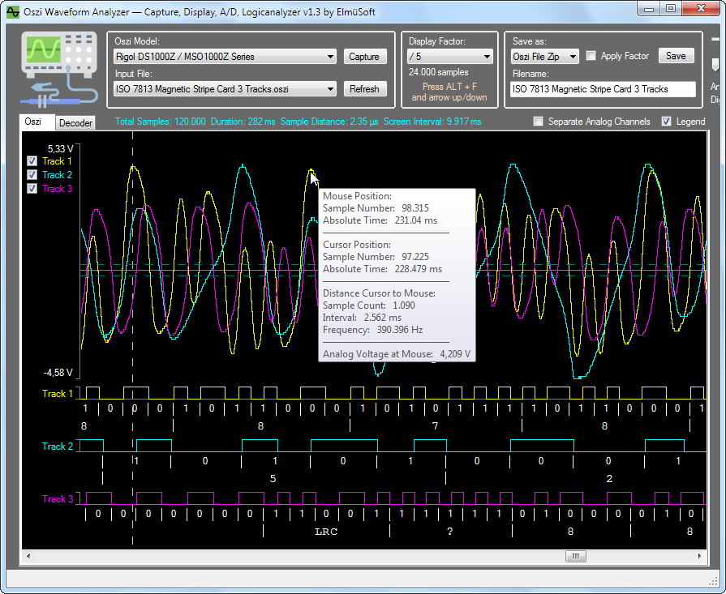
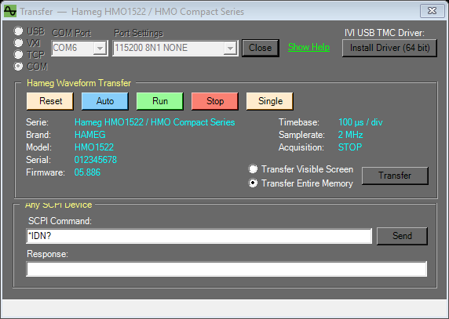
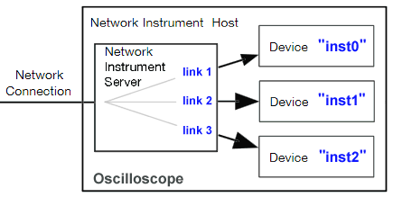
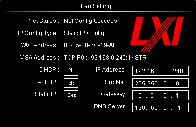

Oszi Waveform Analyzer is a masterpiece that converts your oscilloscope into a powerful analysis instrument
with features that you cannot find anywhere else.

Features
Oszi Waveform Analyzer transfers analog and digital signals from the oscilloscope to the computer over USB, VXI, TCP or RS232 (COM port) using the SCPI protocol.
Oszi Waveform Analyzer does NOT require any huge installations like NI-VISA (1 GB), TekVISA (100 MB), IVI, UltraSigma (500 MB).
Oszi Waveform Analyzer requires only the .NET framework 4.0 or higher.
Oszi Waveform Analyzer runs on Windows 7, 8, 10 and 11.
Oszi Waveform Analyzer runs on Mono on Linux and Mac. Some missing functions have to be added (see below).
Oszi Waveform Analyzer includes the installer for the small 64 bit Windows USB TMC driver (24 kB). Linux has the driver already in the kernel.
Oszi Waveform Analyzer supports up to 255 channels that may have analog or digital data or both.
Oszi Waveform Analyzer can zoom the signal horizontally and vertically.
Oszi Waveform Analyzer has a menu with the available operations that appears when you right-click into the signal.
Oszi Waveform Analyzer shows signal details in a tooltip, can measure voltages and precise timing and show a measure raster.
Oszi Waveform Analyzer has multiple A/D converters, noise suppression, can apply math operations on signal data, etc.
Oszi Waveform Analyzer has a logic analyzer for SPI bus, I²C bus, CAN Bus, UART (RS232), and more with full decoding.
Oszi Waveform Analyzer can split bidirectional half-duplex traffic on a single Data wire into separate Rx and Tx channels.
Oszi Waveform Analyzer allows to decode chip-specific SPI and I²C packets and protocol specific UART packets.
Oszi Waveform Analyzer can edit analog and digital signals with copy and paste.
Oszi Waveform Analyzer stores waveforms in the open-source OSZI file format which applies the highest compression to waveform data.
Oszi Waveform Analyzer can load CSV files created by the oscilloscope.
Oszi Waveform Analyzer is open source and YOU can add new decoders, file formats and oscilloscope models.
Oszi Waveform Analyzer allows you to analyze very specific signals that you cannot even analyze with most expensive commercial products.
Oszi Waveform Analyzer is high quality software, written by a software and hardware developer with 40 years of programming and electronic experience.
Oszi Waveform Analyzer is optimized for maximum speed in every line of it's very clean source code.
NEW in v1.9: Added BIN, CSV and CAP file import for OWON oscilloscopes VDS 1021, VDS 1022, VDS 2052 (thanks to Leonel).
NEW in v2.0: Bugfix in mathematical operations if result channel was used as input (thanks to Peter).
NEW in v2.1 + v2.2: Bugfixes in I²C decoder (thanks to Peter).
NEW in v2.3: Double clicking an Oszi file does not open a new process (thanks to Peter).
NEW in v2.4: Added CSV import for Picoscope 3206 MSO (thanks to Leonel).
NEW in v2.5: DC Capture allows to capture very slow processes over hours or days.
NEW in v2.6: Decoder for USB Full speed captures.
NEW in v2.7: Several improvements in CAN decoder.
NEW: Waveform transfer from Hameg oscilloscopes HMO1522 / HMO Compact, HM2008 / HM1508 / HM1008 and HM507 over RS232 (COM port). See Hameg Oscilloscopes.
Now it is up to you to implement further oscilloscope models.
Download the programming manual that explains the SCPI commands.
Open the above Transfer window and send the SCPI commands manually to see what your scope responds.
I have designed Oszi Waveform Analyzer from the first day to be easily expandable.
Clone the Rigol classes, rename and modify them and register the new oscilloscope serie in the TransferManager.
Hameg Oscilloscopes

Hameg (today Rohde & Schwarz) oscilloscopes are connected over their RS232 interface.
Select the oscilloscope serie, then COM in the Transfer window, the COM port and the port settings.
The port settings must match the settings in the interface menu of the oscilloscope.
Serie
Default Port Settings
Protocol
Tested
HMO1522, HMO1002, HMO1202, HMO2022 (HMO Compact)
115200 8N1 RTS
SCPI :CHANnel:DATA, floats in Volt, logic pod
Real HMO1522
HM2008, HM1508, HM1008 (CombiScope)
19200 8N2 RTS
SCPI :TRACe, 8 bit values
Simulation only
HM507
19200 8N2 RTS
Proprietary binary protocol
Real HM507
The buttons Run, Stop, Single and Auto remote control the oscilloscope.
The oscilloscope must be stopped before you click Transfer. Otherwise each channel would come from a different acquisition.
RS232 is slow: at 115200 baud a transfer of 10.000 float samples takes approx 3.5 seconds. The progress is shown in the status bar and you can abort it.
HMO Compact series:
The HO720 interface has a RS232 port and a USB port. The USB port is a virtual COM port, so also select COM for it.
Transfer Visible Screen transfers the displayed samples, Transfer Entire Memory all samples in the display window.
If the logic probe HO3508 is connected and POD 1 is on, the 8 digital channels are transferred too.
If an old firmware does not support the commands :CHANnel:DATA, the :TRACe commands are used automatically.
CombiScopes HM2008, HM1508, HM1008:
The oscilloscope must be in digital mode (DSO). In analog mode there is no data to transfer.
Envelope and peak detect waveforms cannot be transferred. Use the acquisition mode Refresh.
Transfer Entire Memory is only possible in STOP mode.
HM507:
The HM507 has only a RS232 port. Use a 1:1 cable (not crossed).
The oscilloscope detects the baudrate (110 ... 115200) automatically, but only once after power on or after leaving the remote state.
If it does not respond, press the button AUTOSET (LOCAL) on the oscilloscope or switch it off and on and connect again.
Switch to digital storage mode with the button STOR. The button Stop activates HOLD on the oscilloscope.
Each channel has 2048 samples (200 samples per division).
A warning is shown after the transfer if the voltage or time values are not exact (VAR knob uncalibrated, X-MAG x10, ADD mode, GND).
XY mode cannot be transferred. Capture in Yt mode and use the X/Y Plot instead.
The field SCPI Command in the Transfer window also works with the HM507.
Binary bytes in the response are displayed in hex, for example CH1:<19>.
The SCPI Library for C# Programmers
As this project is open source you can use the class SCPI also in your own C# project.
It allows you to communicate with any SCPI device over USB, VXI, TCP or RS232.
My code will keep your harddisk clean. You do not need to install the NI-VISA monster of 1 Gigabyte.
In the class SCPI you can enable TRACE_OUTPUT to see the SCPI commands and responses.
In the subfolder Documentation you find a logfile of the SCPI commands and responses of my scope.
Connection over USB, VXI, TCP, COM
Oszi Waveform Analyzer offers 4 options to connect to your oscilloscope:
Option 1: USB Connection
USB is the easiest connection with the fastest transfer.
All you have to do is connect the USB cable and install the IVI driver.
But if you have an oscilloscope that implements a proprietary USB interface the IVI standard may not be supported.
Then Oszi Waveform Analyzer will tell you that no USB device of type 'Test and Measurement Class' was found.
The following 2 chapters explain how to connect over ethernet.
ATTENTION: If you have an oscilloscope from a sloppy brand like Rigol you may have an ugly bug:
My Rigol will not connect over ethernet anymore if the USB cable was once connected. (see bug report)
Option 2: VXI-11 Connection
If your oscilloscope has an ethernet RJ-45 plug, it probably supports the VXI-11 protocol.
VXI (VME eXtensions for Instrumentation) is a standard for network communication between instruments and controllers.
The implementation of the VXI protocol was quite complex: 1100 lines of source code.
VXI-11 is a well designed protocol that has a port mapper on TCP and UDP port 111.
When you click the button Search, Oszi Waveform Analyzer sends a broadcast request to port 111.
If a VXI-11 capable device is connected, it will send a response that contains the core VXI port of the device.
So with one click you get instantly the IP address and the listening TCP port of your oscilloscope.
My Rigol listens on port 618 for SCPI commands wrapped into VXI-11 packets.
ATTENTION: If you have an oscilloscope from Rigol that uses the unintelligent default IP address
169.254.109.240 and your network is 192.168.XXX.YYY, the broadcast request will be blocked by the network mask.
I recommend to configure a static IP address. Also DHCP mode does not work correctly in a Rigol oscilloscope.
The VXI-11 protocol allows an 'Instrument' (oscilloscope) to contain multiple logical 'Devices':

Each device has a logical name that you must know, otherwise you cannot connect.
Rigol, Agilent, Keysight and other brands use the device name inst0 which is case sensitive.
But it may also be inst1 or inst2 or gpib0 or gpib1 or gpib0,4 or gpib0,6, ....
If you have tried to connect with inst0 and get an error, search the VISA Address of your oscilloscope.
After pressing the buttons Utility, IO Settings and Lan Config my Rigol shows this information:

Here the VISA address does not contain the logical device name, which indicates that the default name inst0 has to be used.
But in other instruments you may get:
TCPIP::A-52230A-04585.local::inst1::INSTR where the device name is inst1.
TCPIP0::DK78192::gpib0,2::INSTR where the device name is gpib0,2.
If nothing of this works you must run a software from the manufacturer that can communicate with your scope.
Then use Wireshark to sniff the network traffic and search for the VXI-11 command CREATE_LINK Call:
Illustration removed from this redistribution; see the textual description.
Here you see that a link is created to the logical device with the name inst0.
Make sure that the CREATE_LINK Reply does not return an error. Some software tests multiple names until one works.
Enter the case sensitive name in Oszi Waveform Analzyer under VXI Link and you are ready to connect.
Option 3: TCP Connection
Some oscilloscopes additionally accept SCPI commands over a plain TCP connection.
In this case no complex protocol like VXI-11 is used. The SCPI text commands are simply put into TCP packets.
My Rigol listens on TCP port 5555 for SCPI commands. But this port is completely undocumented.
Your scope may use another port or not support this communication at all.
You can use a port scanner to find all listening ports.
Option 4: COM Port (RS232)
Older oscilloscopes and interface cards like the Hameg HO720 have a RS232 port.
Select COM in the Transfer window. The COM ports of the computer are loaded automatically.
You can also enter a port name, for example /dev/ttyUSB0 on Linux.
A USB to RS232 adapter and the USB port of the Hameg HO720 appear as a virtual COM port and work the same way.
The Port Settings have the format Baudrate Databits Parity Stopbits Handshake, for example 19200 8N2 RTS:
Part
Values
Baudrate
300 ... 115200 and higher
Databits
7 or 8
Parity
N = None, E = Even, O = Odd, M = Mark, S = Space
Stopbits
1 or 2
Handshake
RTS = RTS/CTS hardware handshake, XON = XON/XOFF, NONE = no handshake (optional, default NONE)
The settings must match the interface menu of the oscilloscope.
Each oscilloscope serie remembers its own COM port and port settings.
If the Transfer window shows a timeout when sending with RTS handshake, the oscilloscope does not activate the CTS line:
Check that it is turned on, the cable and the handshake setting.
Transfer Speed
USB:
If your scope implements Full speed USB, the maximum transfer rate is 12 MBit/sec.
If your scope implements High speed USB, the maximum transfer rate is 480 MBit/sec.
Ethernet:
If your scope implements Fast Ethernet, the maximum transfer rate is 100 MBit/sec.
If your scope, router and computer support Gigabit Ethernet, the maximum transfer rate is 1 GBit/sec.
If your computer connects over WIFI you will have a significantly worse performance.
RS232:
RS232 is very slow: at 115200 baud approx 11 kB/sec, at 19200 baud approx 1.9 kB/sec.
My Rigol has 480 MBit USB and 100 MBit ethernet and a waveform transfer is 4 times faster over USB.
And plain TCP transfer is approx 30% faster than VXI transfer.
But the speed depends on many factors.
Oscilloscope manufacturers use cheap processors too keep the price low.
The processor has to control the entire oscilloscope and often does not have much power left for data transfer.
When you enable TRACE_OUTPUT in the SCPI class you see how slow the processor responds to some commands.
A primitive command like :WAVEFORM:STOP, which only stores a value in the scope, may takes 80 ms to execute!
And over the VXI protocol my Rigol sends 24 Megabyte sample data in ridiculous chunks of 396 bytes!
This shows how intelligent Rigol engineers are. The theoretically possible network speed is wasted.
You find a logfile of VXI transfer in the subfolder Documentation.
Storing Waveforms on Disk
CSV Files
Most oscilloscopes offer the option to store the capture in a CSV file.
The rows of the CSV file contain the analog voltages as floating point values, each channel in it's own column.
The problem is how to transfer the X axis settings, like timestamp and samplerate in a CSV file?
Here each manufacturer cooks his own soup.
And Rigol, the most inconsistent company under the sun, does not even use the same CSV format in their own products.
I implemented a CSV parser into Oszi Waveform Analyer. And I had to write a different code for each Rigol serie.
The Rigol DS1000DE serie stores the timestamp in the first column (with rounding errors):
Time,X(CH2),
Second,Volt,
-2.4000157e-04,-0.00000e+00,
-2.3600156e-04,-4.00000e-02,
-2.3200156e-04,-0.00000e+00,
-2.2800156e-04,-4.00000e-02,
-2.2400156e-04,-4.00000e-02,
-2.2000156e-04,4.00000e-02,
etc....
This is not an intelligent format because in each sample they need 15 ASCII characters for the timestamp.
With 1 Megasamples they store 15 Megabyte only for the useless timestamps.
In the first 2 rows they send the channel names and other stuff which is undocumented.
The long floating point voltages are a waste of disk space because the A/D converter in the scope has only 8 bit resolution.
Rigol developers are not smart enough to remove the useless trailing zeroes.
Instead of "-0.00000e+00" they could easily send "0" and reduce the file size significantly.
And the Rigol DS1000Z serie stores a completely useless counter in the first column:
X,CH1,Start,Increment,
Sequence,Volt,-1.144000e-03,2.000000e-06
0,4.00e-02,
1,-1.20e-01,
2,-1.20e-01,
3,4.00e-02,
4,4.00e-02,
5,-1.20e-01,
etc....
The format of the first two rows is completely different than in the DS1000DE and - obviously - undocumented.
I found that the last value in the second row is the time distance between two samples in seconds.
Both formats are among multiple examples for the lack of intelligence of Chinese Rigol developers.
I'am sure that other oscilloscopes use completely different CSV formats, so each serie requires it's own CSV parser.
A full 24 Megsample capture of my scope occupies 300 Megabyte in a CSV file.
If I store only 3 captures on disk they already occupy 1 Gigabyte!
The CSV format is totally obsolete.
WFM Files
Rigol also offers to store a capture in a WFM (WaveForM) file.
This occupies less disk space because it is a binary format.
The problem is that this format is undocumented, and guess what?
Each Rigol serie uses a completely different file header and content.
I found a WFM file format description from Tektronix, but they say it was developed for internal use.
Apart from the waveform data they store all the hundreds of oscilloscope settings, that you will never need.
They store for example the trigger voltage, trigger mode, AC/DC coupling, probe ratio, etc...
All this useless information makes a WFM file parser extremely complex.
I will not implement a dozen of complicated parsers for undocumented WFM file formats into Oszi Waveform Analyzer.
And tomorrow Rigol will sell a new serie which uses just another different WFM format.
The WFM format is obsolete.
OSZI Files
So, how to save signals using few disk space and using a simple file format?
As this file format does not exist, I created it.
When you start Oszi Waveform Analyzer it registers the file extension *.oszi
What does OSZI stand for? "Oscilloscope" is in German "Oszilloskop" and the abbreviation is "Oszi".
The OSZI file format is open-source and free of any license.
An OSZI file uses the maximum compression that is possible, but it is still a lossless format:
How much disk space an Analog Channel requires depends on the analog resolution of the A/D converter in the oscilloscope.
My Rigol has an analog resolution of 8 bit, so each sample can be stored lossless in one byte.
But an OSZI file can also store any other A/D resolution, like for example 10 bit.
In this case exactly 10 bits are stuffed together until a byte is full and written to disk.
If 10 bits would be stored as two bytes, 6 bits would be wasted.
More resolution than 12 bit does not make sense because your monitor cannot even display the 4096 vertical pixels of 12 bits.
And if you want to save disk space you can even reduce the bit resolution in the OSZI file as you like.
A 12 bit resolution can be reduced to 8 bit and the file is 50% smaller.
For Digital Channels Oszi Waveform Analyzer choses automatically the best compression algortithm:
The Mask compression stores one bit per sample and channel and stuffs the bits together until a byte is full.
For example for 3 digital channels A,B,C the first byte stuffs the bits like: ABCABCAB, the next byte CABCABCA, ...
But mostly RLE compression (Run Length Encoding) is more efficient because digital data has long periods of the same status.
It only stores the count of samples util the next change of the digital status.
For example 119 consecutive samples that are all High or Low are compressed into in only one byte.
For example 15894 consecutive samples that are all High or Low are comrpessed into only two bytes.
Although this is already a very good compression, you can additionaly apply a ZIP Compression.
This decreases the file size even more.
Look at the demo OSZI files which are installed with the program and study their file size.
The file ISO 7816 Smartcard 12795 + 51182 Baud - Clk 4,76 MHz.oszi has 3 channels with 2 million samples and occupies 5 kB.
The OSZI file can store up to 255 cannels. Each channel can have analog data or digital data or both.
Also the names are stored that you have assigned to the channels.
The entire OSZI file is secured by a CRC check, so corrupt files will always be rejected.
I implemented a version number into the file so future extensions are possible.
After running the program for the first time it registers the file extension OSZI.
You can then double click any OSZI file anywhere on your disk and it will open in Oszi Waveform Analyzer.
The folder in which you have double clicked the file will be your new working folder for further open/save operations.
WAV Files
Oszi Waveform Analyzer can import uncompressed WAV audio files (PCM with 8, 16, 24, 32 bit and float with 32, 64 bit).
Click the button Open... beside the list of input files to open a WAV file from any folder.
Or copy it into the subfolder Samples, then it appears in the list of input files.
After Open... the list of input files shows the files in the folder of the opened file, like after a double click on an OSZI file.
WAV files are loaded independently of the selected oscilloscope model.
Each audio channel becomes an analog channel. A stereo file has the channels Left and Right.
The values are normalized: 1.0 means full scale (0 dBFS). The time axis uses the sample rate of the file.
At most 24 Mega samples per channel are loaded (2 minutes of a stereo file with 192 kHz). Cut longer files with an audio editor.